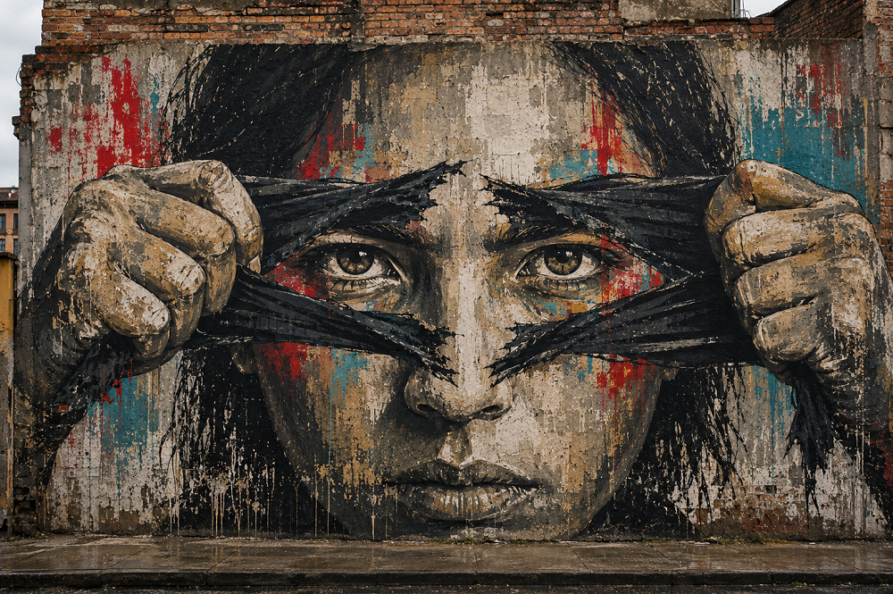

Inicio > Blog Bitácora de un bibliotecario > Bibliotecología comunitaria con un giro decolonial (10)
Bibliotecología comunitaria con un giro decolonial (10)
Las bibliotecas como herramientas para la educación radical
De la información a la investigación y la acción colectivas
Este post forma parte de una serie que recupera la bibliotecología comunitaria de sus distorsiones institucionales, devolviéndola a sus raíces en la lucha, la ayuda mutua y la supervivencia colectiva. Considera las bibliotecas no como servicios neutrales, sino como infraestructuras en disputa, atravesadas por relaciones de poder, resistencia y memoria, y explora la bibliotecología como un trabajo de solidaridad anclado en comunidades reales, conflictos reales y la tensión constante entre el control institucional y la autonomía colectiva. Todas las entradas de esta serie pueden consultarse en el índice de esta sección.
Un taller, por sí solo, no constituye una pedagogía
Imaginemos que varios vecinos llegan a una biblioteca con copias del mismo aviso de desalojo. La biblioteca tiene varias opciones: orientarlos en la legislación sobre vivienda, ayudarlos a consultar registros judiciales, invitar a un asesor legal o preparar una guía sobre los procedimientos pertinentes. Todas estas respuestas pueden resultar útiles y, aun así, dejar intacta la relación educativa: la biblioteca posee o consigue el conocimiento, los especialistas lo explican, y los vecinos lo reciben.
El proceso cambia cuando el aviso pasa a ser objeto de una investigación colectiva. El grupo examina atentamente su contenido. Los participantes comparan fechas, cláusulas, firmas e inconsistencias. Identifican quién lo emitió, qué leyes invoca, qué deja sin explicar y si han aparecido avisos similares en otros lugares. Ponen en relación sus experiencias, las fuentes legales, los registros de propiedad, la prensa local y los casos anteriores. Las preguntas sin respuesta inmediata pasan a formar parte del trabajo; ya no indican que la sesión haya fracasado.
El carácter educativo del encuentro depende de lo que ocurre con la autoridad en su interior. Una conferencia sobre literatura revolucionaria puede reproducir la obediencia. El análisis de un documento administrativo aparentemente ordinario, en cambio, desarrolla la capacidad colectiva de pensar. La fuerza radical del encuentro reside en la relación que se crea entre las personas, las pruebas y la interpretación.
El cambio decisivo se produce cuando las personas dejan de ocupar el lugar de audiencia y comienzan a investigar una situación que necesitan comprender.
El problema precede a la lección
Paulo Freire describió la educación convencional mediante el modelo bancario: el conocimiento se deposita en alumnos que deben recibirlo, retenerlo y reproducirlo. Frente a este modelo propuso una educación problematizadora, cuyo punto de partida es una realidad que los alumnos ya habitan, aunque todavía no hayan conseguido interpretarla plenamente.
Para las bibliotecas, este planteamiento modifica la manera de diseñar el trabajo educativo. Una clase preparada de antemano, con conclusiones ya definidas, cede su lugar a una situación sin resolver: un aumento del alquiler, salarios adeudados, el cierre de un servicio de salud o la contaminación de un arroyo. El problema inmediato proporciona las primeras preguntas; los recursos de la biblioteca ayudan al grupo a ampliarlas y precisarlas.
En una sesión, una ordenanza municipal podría leerse junto con un mapa, un artículo periodístico, una tabla presupuestaria, una fotografía y los testimonios de las personas afectadas. Los participantes rastrean el origen de cada afirmación, comparan las explicaciones oficiales con las condiciones observables e identifican vacíos que exigen una investigación más profunda. El bibliotecario aporta conocimientos sobre estrategias de búsqueda, verificación, comparación de fuentes, interpretación documental y organización de la información. Esa experiencia fortalece la investigación sin determinar de antemano sus resultados.
El diálogo exige disciplina intelectual. Los participantes necesitan distinguir una afirmación de una prueba documentada y una inferencia plausible de un hecho comprobado. El lenguaje técnico requiere explicaciones; las afirmaciones contradictorias, un examen cuidadoso. El rigor sigue siendo indispensable, pero su construcción se vuelve compartida y visible.
La lección se desarrolla, entonces, a partir del problema. Su rumbo permanece abierto el tiempo suficiente para que nuevas pruebas, desacuerdos y experiencias transformen lo que el grupo cree saber.
El estudio debe volver a la situación
La idea de praxis de Freire vincula la reflexión con la acción. En la educación bibliotecaria, esa conexión impide que la indagación crítica termine como una conversación interesante.
Los vecinos que estudian un aviso de desalojo quizá elaboren un cuadro comparativo, reconstruyan una cronología, preparen preguntas para una oficina de vivienda, localicen a otros inquilinos afectados o lleven sus hallazgos ante un abogado. Un grupo que investiga la contaminación del agua podría diseñar un registro de muestreo, comparar los puntos oficiales de monitoreo con las observaciones de la comunidad o reunir las pruebas necesarias para exigir un análisis independiente. El proceso educativo ha producido algo útil.
La acción proporciona al grupo nuevos elementos para el análisis. Quizá una entidad responda de manera evasiva, un argumento legal resulte más débil de lo previsto o un mapa revele un patrón que había pasado inadvertido. Ciertas tácticas también exponen a algunos participantes a riesgos mayores. El grupo regresa a la biblioteca, estudia lo ocurrido y revisa su interpretación.
Este ritmo requiere continuidad. Una actividad aislada introduce un tema, pero rara vez ofrece tiempo para investigar, actuar, evaluar las consecuencias y comenzar de nuevo. Las bibliotecas sostienen el proceso cuando conservan los rastros de las búsquedas, reservan espacios para reuniones posteriores, guardan copias de trabajo y procuran que los métodos empleados en una investigación sigan disponibles para la siguiente.
Un proceso sólido reduce la dependencia del bibliotecario o del experto invitado. Las personas salen mejor preparadas para localizar pruebas, poner a prueba una explicación, reconocer la incertidumbre y organizar por sí mismas una nueva investigación.
Educación política sin tutela política
Frantz Fanon consideró la educación política como algo esencial para la descolonización y advirtió sobre los líderes que la confunden con los discursos, la movilización o la conducción de un público obediente. Su advertencia se aplica directamente a los programas bibliotecarios radicales.
Una biblioteca puede adoptar un lenguaje de resistencia y, aun así, continuar reproduciendo la tutela cuando su personal selecciona los libros correctos, invita a oradores que presentan el análisis correcto y conduce a los participantes hacia conclusiones ya decididas. La comunidad deja de ser tratada como políticamente pasiva, pero sigue escuchando la línea política que otros han definido.
La educación política exige una tarea más difícil. Los participantes necesitan acceder a las decisiones, los intereses, las instituciones y las fuerzas materiales que configuran un conflicto. Deben comprender cómo se produjo una política, quién tiene capacidad para modificarla, qué alianzas la sostienen, dónde conviene ejercer presión y qué costos entraña cada respuesta. Además, requieren espacio para discutir estrategias sin que el desacuerdo sea interpretado como falta de compromiso.
Por eso conviene tratar con cuidado la expresión "armar a las comunidades con conocimiento". La metáfora supone que una biblioteca, dueña del conocimiento, entrega un arma. Un documento adquiere fuerza política cuando las personas lo interpretan, lo relacionan con sus circunstancias, cuestionan los usos que se hacen de él y deciden qué harán con lo aprendido.
Fanon también sitúa en primer plano las condiciones materiales. Un proceso de estudio organizado durante el horario laboral o en una lengua inaccesible distribuye de manera desigual las posibilidades de participar. El transporte, la alimentación, la discapacidad, el cuidado infantil y la seguridad personal forman parte de la planificación pedagógica porque determinan quién logra sostener el trabajo.
La pedagogía comprometida transforma al facilitador
En Enseñar a transgredir, bell hooks desarrolla una pedagogía comprometida en la que el aprendizaje involucra a la persona entera y transforma tanto a quien enseña como a quien aprende. La apertura, el riesgo y el movimiento intelectual que se esperan de los participantes también deben afectar a quien facilita el proceso.
En el caso de los bibliotecarios, una presencia comprometida convive con los límites profesionales y el conocimiento especializado. El personal debe estar dispuesto a explicar sus elecciones de materiales, admitir lo que desconoce, reconocer cuándo la experiencia de un participante cuestiona su interpretación y modificar la sesión en consecuencia. Su autoridad se vuelve visible y discutible, en vez de ocultarse detrás del programa.
hooks también rechaza una educación política solemne y desprovista de alegría. La ira y el dolor intervienen en el aprendizaje junto con el humor, el placer, el cansancio, la curiosidad y el miedo. Un grupo que examina la violencia o el despojo no puede ser tratado como un conjunto de lectores sin cuerpo. Al mismo tiempo, nadie debería verse obligado a revelar una experiencia dolorosa para ganarse un lugar en la conversación.
Una sesión participativa ofrece distintas formas de incorporarse al trabajo. Algunas personas anotan un texto o dibujan un mapa; otras prefieren una demostración práctica, un análisis en parejas o un debate colectivo. Estas opciones abren la reflexión a diferentes maneras de hablar, concentrarse, recordar y responder, sin fabricar una intensidad emocional.
El facilitador comparte la responsabilidad por las condiciones intelectuales y humanas del encuentro. También debe aceptar la posibilidad de que el aprendizaje transforme a quien lo convocó.
La lección puede quedar sin resolver
Silvia Rivera Cusicanqui vincula la descolonización con prácticas descolonizadoras. Su sociología de la imagen cuestiona la idea de que el pensamiento crítico reside principalmente en la argumentación escrita. Las fotografías y los dibujos, junto con los gestos, la vestimenta, los espacios callejeros y los entornos domésticos, revelan relaciones coloniales que el lenguaje oficial oculta.
A partir de esta provocación, una investigación bibliotecaria incorpora las imágenes al análisis desde el comienzo. Los participantes examinan, por ejemplo, cómo un plan de reurbanización presenta a un barrio como "vacío"; comparan imágenes promocionales con fotografías de la vida cotidiana o rastrean lo que ha desaparecido de un mapa. El registro visual funciona así como un campo de discusión.
El concepto de ch’ixi de Rivera Cusicanqui, surgido de un horizonte intelectual e histórico aymara, también se opone a la exigencia de resolver la contradicción mediante una síntesis armoniosa. Su valor aquí es preciso: un grupo aprende en conjunto mientras varios relatos irreductibles permanecen en tensión.
Los datos oficiales sobre el agua entran en conflicto, a veces, con las observaciones sensoriales de los vecinos y los calendarios estacionales de los pescadores. Preservar esas diferencias evita convertir una sola fuente en la realidad y relegar las demás al ámbito de la cultura o la percepción. Colocadas unas junto a otras, permiten observar qué miden las instituciones, qué experimentan los vecinos y qué deja incompleto cada relato.
Convertir el ch’ixi en una fórmula portátil de la jerga bibliotecaria lo separaría del mundo en el que Rivera Cusicanqui lo desarrolló. Su obra interrumpe una compulsión pedagógica frecuente: el deseo de resolver las diferencias, resumir el conflicto y cerrar cada sesión con una posición coherente. Parte del aprendizaje consiste en precisar una contradicción y seguir trabajando con ella sin fingir que ha desaparecido.
El currículo oculto en el trabajo bibliotecario cotidiano
Los encuentros cotidianos proporcionan buena parte de la materia prima de un currículo radical. Su forma depende de cómo los organice la biblioteca.
En el mostrador de referencia, una persona recibe una respuesta y se marcha. Otra posibilidad consiste en mostrarle cómo se llegó a ella: qué términos guiaron la búsqueda, por qué se confió en una fuente más que en otra, dónde persiste la incertidumbre y cómo seguir el rastro por su cuenta. La interacción se transforma así en una pequeña iniciación práctica en cómo investigar.
Un grupo de lectura supera la conversación sobre los temas de una obra cuando coloca el texto junto a los documentos del mundo que describe. Una novela sobre migración podría leerse junto con una normativa fronteriza, un mapa de transporte, una fotografía familiar, estadísticas de empleo y el boletín de una asociación de migrantes. La literatura ayuda a percibir aquello que las fuentes administrativas no logran expresar; esas fuentes, a su vez, muestran las estructuras que rodean la experiencia individual.
La alfabetización digital abarca mucho más que el manejo de un dispositivo o una plataforma. Los participantes investigan qué datos recopila una plataforma, cómo una interfaz orienta el comportamiento, qué resultados prioriza un motor de búsqueda, qué pretende inferir un sistema automatizado y cómo proteger una cuenta. La competencia técnica se desarrolla junto con la comprensión del entorno en el que funciona la tecnología.
Incluso las muestras de la colección sirven como invitaciones a investigar. En vez de reunir materiales que anuncien un tema cerrado, una muestra coloca perspectivas contradictorias una junto a otra, identifica las preguntas que las separan y abre una vía para profundizar en ellas. El estante pasa a ser el comienzo de un problema, no su explicación oficial.
Estas prácticas requieren preparación, criterio y constancia. Su carácter radical reside en las relaciones intelectuales que producen: las personas acceden a los medios necesarios para examinar afirmaciones y volver utilizable el conocimiento.
Lo que el aprendizaje hace posible
Las bibliotecas aportan recursos singulares a la educación radical. Una pregunta permanece abierta con el paso del tiempo y conecta una conversación con documentos, tecnologías, espacios y personas que poseen saberes diferentes. La biblioteca conserva el recorrido de la investigación para que los participantes regresen cuando la acción haya producido nuevas pruebas. Esa continuidad permite reutilizar los métodos.
Nada de esto garantiza la liberación. El trabajo educativo ocurre dentro de conflictos que no logra resolver por sí solo. Una comunidad quizá comprenda claramente un sistema y carezca todavía del poder necesario para transformarlo. Los participantes pueden discrepar sobre la acción más conveniente. Las instituciones pueden ignorar las pruebas, defender sus intereses o tomar represalias.
El valor del proceso reside en las capacidades que desarrolla en esas condiciones. Las personas aprenden a formular preguntas más precisas, comparar fuentes, descubrir una explicación engañosa y reconsiderar una forma de actuar a la luz de sus consecuencias. El conocimiento adopta la forma de una práctica colectiva, en lugar de circular como un objeto terminado que pasa de una persona a otra.
Una estantería de libros radicales demuestra muy poco. El trabajo comienza cuando una comunidad convierte un problema en una pregunta, esa pregunta en una investigación y esa investigación en una acción colectiva.